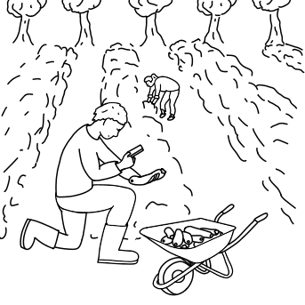
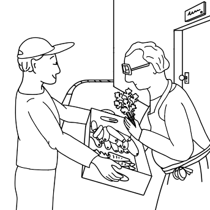
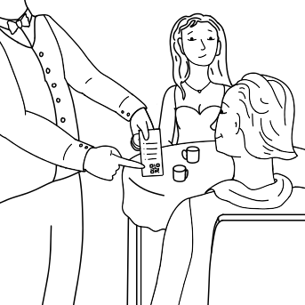
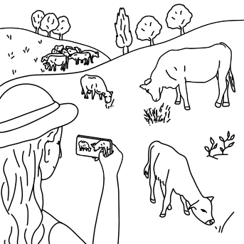
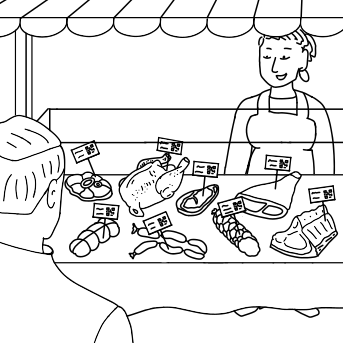
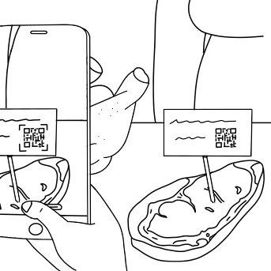

A culinary experiences journal to reconnect with the ecosystems and humans that provide our food
Chapter 1
The seasonal bounty




A simple scan to capture all your culinary experiences
Easily track and analyze your consumption habits
Chapter 2
The grazing phenomenon




Reliable data to make well-informed buying decisions
Understand how respectful work leads to superior quality
#KnowYourFood